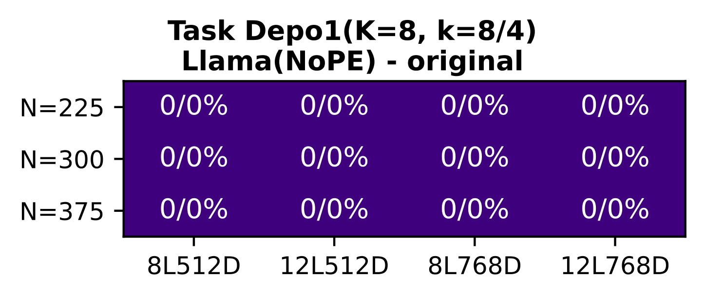
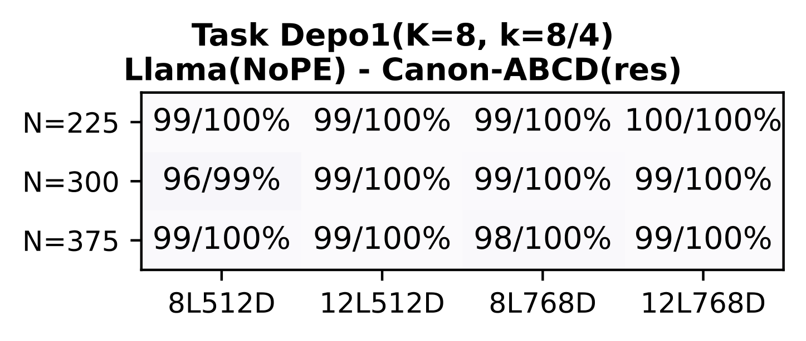
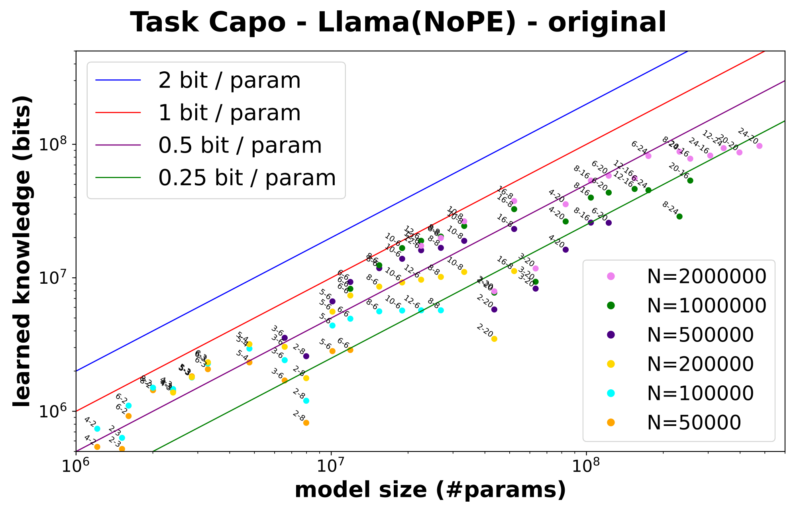
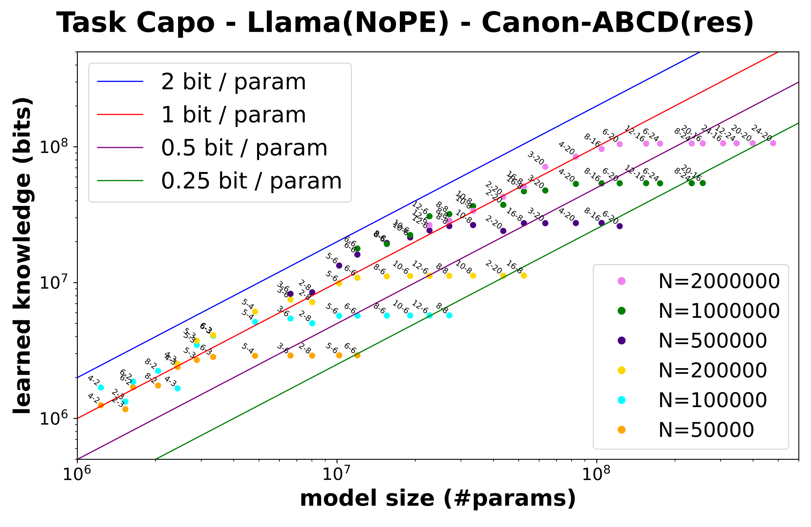
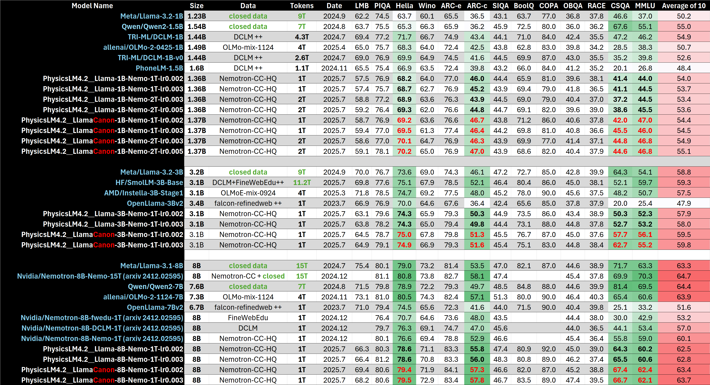
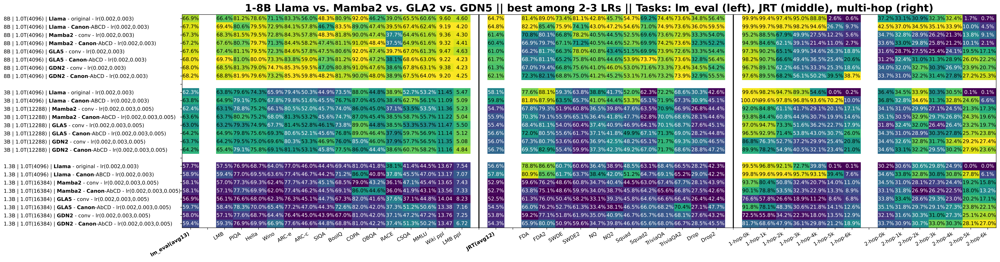

Four criteria ensuring synthetic tasks isolate meaningful architectural differences
[4.1]
Five Synthetic Tasks Isolating Atomic Skills
DEPO
Reasoning depth — k-hop traversal over directed permutations (K up to 16)
How deep can the model reason in one forward pass?
BREVO
Reasoning breadth — recursive DAG traversal, topological sort
How many dependencies can be tracked simultaneously?
CAPO
Knowledge capacity — bits-per-parameter storage of biographical facts
How much can the model memorize per parameter?
MANO
Knowledge manipulation — arithmetic on retrieved knowledge (mod 23)
Can the model compute over what it has memorized?
LANO
Hierarchical structure — CFG parsing via dynamic programming
Can the model learn to parse language-like structures?
Key: Each task targets a distinct dimension of intelligence. Controlled via 3 data scales × 4 model scales → “mini scaling laws.”
Five tasks decomposing intelligence into atomic, measurable capabilities
[4.1]
Task Details: Depo & Brevo
DEPO — Reasoning Depth
k-hop traversal over directed permutations. Given a sequence of (node, successor) pairs, answer: what is the k-th successor of query node $q$?
<bos> x₁ y₁ x₂ y₂ … <query_k> q → a
Measures: how deep can the model reason in one forward pass (K up to 16 hops)?
BREVO — Reasoning Breadth
Recursive DAG traversal: given a directed acyclic graph with edges in random order, list nodes in topological order.
Measures: how many dependencies can the model track simultaneously? Requires recursive visit pattern, not just memorization.
Output: A, B, C, D, E, F (valid topological order)
[4.1]
Task Details: Capo, Mano & Lano
CAPO — Knowledge Capacity
How many bits per parameter can the model store?
Synthetic biographies: “[name] was born in [year], hometown is [city], works for [company]…”
Measures raw memorization capacity independent of reasoning.
Alice born 1985, city Paris,
works Google …
Q: Alice city? A: Paris
MANO — Knowledge Manipulation
Can the model compute over memorized knowledge?
Arithmetic on retrieved knowledge: lookup values then evaluate nested expressions mod 23.
LANO — Hierarchical Structure
Can the model parse language-like structure?
Context-free grammar parsing via dynamic programming. Resolves ambiguity in synthetic languages.
Together: These five tasks span the space of reasoning depth, breadth, knowledge capacity, manipulation, and structural understanding — a complete “cognitive battery” for architectures.
[4.1]
Result 0: Initial Comparison Reveals Clear Signatures
GLA performs weakest overall — limited on all five tasks, especially reasoning depth
Mamba2 excels at knowledge (Capo, Mano) but lags behind in multi-hop reasoning
GDN improves reasoning vs Mamba2, occasionally surpasses Transformer
RoPE dominates Depo (depth) and Lano (structure) — strongest reasoner
Caveat:This comparison is incomplete and partially unfair — Mamba2 and GDN include a built-in conv1d (horizontal mixing) that GLA and Transformer lack. The real question: what happens when we add this missing ingredient?
[4.1]
03
Canon Layers
Enhancing horizontal information flow
Why Canon? The Associative Recall Problem
The folklore: associative recall needs 2 attention layers
[A][B] … [A][?] → predict [B]
Causal masking prevents first [A] from attending forward to [B]
Layer 1: copies A’s info into B’s representation — B now “knows” its key is A
Layer 2: second [A] queries, retrieves B via enriched key-value store
Using global $O(n^2)$ attention just to pass info between neighbors = “shooting a bird with a cannon”
Core problem: Most architectures lack an explicit mechanism for local token-to-token information flow. Attention is global overkill for nearest-neighbor mixing.
Two-layer attention mechanism for associative recall (plots.pdf p.5)
Without Canon: NoPE (no positional embeddings) achieves essentially zero on all reasoning tasks
With Canon: NoPE matches or surpasses RoPE — even exceeds RoPE+Canon on Depo!
NoPE+Canon dominates existing fixes (ALiBi, H-ALiBi) by wide margins
RoPE(¼)+Canon is the best overall: RoPE on only ¼ of dimensions + Canon outperforms full RoPE+Canon
Implication: RoPE usage can be greatly reduced for better length generalization

NoPE (original)

NoPE + Canon

NoPE Capo (orig.)

NoPE Capo + Canon
Key insight:Partial RoPE (¼ dimensions) + Canon outperforms both full RoPE and full NoPE — reduces RoPE dependency for better length generalization while maintaining strong performance
[4.1, Result 3]
Results 4–5 Ablations + MLP/MoE Benefits
Canon-A/B/C/D contribute cumulatively; each independently useful, stacking amplifies gains
Residual essential: the “$h_t +$” preserves vertical pathways; without it, training is slower and less stable
No activation needed: adding SiLU after Canon provides no benefit — attention/MLP already handle nonlinearity
Canon-ACD alone (no attention mod) already outperforms Canon-B(no-res) and Primer
Mamba2’s secret (Result 7): its built-in conv1d ≈ Canon-B. Removing conv1d drops Mamba2 to GLA-level. The SSM itself contributes less than the conv1d!
GDN benefits least (Result 8): its gated delta-rule already captures Canon-like behavior
Key conclusion: GLA+Canon matches Mamba2/GDN — modern innovations may largely replicate Canon-like mixing
GLA (original)
GLA + Canon
Result 6: GLA + Canon
Depth: 1→4 hop • Breadth: 2x • Surpasses Mamba2 on Brevo
Result 7: Mamba2 = conv1d + SSM
Remove conv1d → drops to GLA level. Canon-AbCD improves further.
Result 8: GDN ≈ already has Canon
Gating captures horizontal mixing. Canon-AbCD yields only marginal gains.
Mamba2 no conv1d
Mamba2 (original)
Implication:Canon-ACD alone matches internal conv1d → horizontal mixing is useful across ALL sublayers, not just recurrent/SSM. Current direction of linear-model architecture design may warrant re-evaluation.
[4.1, Results 6–8]
Results 9–10 Final Controlled Architecture Ranking
Result 9: GLA+Canon-AbCD matches most linear models → current architecture direction may warrant re-evaluation
Result 10: With Canon equalizing horizontal mixing, the “fair” ranking across all 5 tasks reveals true architectural strengths
Reasoning Depth (Depo):
RoPE ≈ NoPE >> Linear models (4× deeper)
Knowledge Capacity (Capo):
Linear models >> Transformer (1.4× capacity)
Reasoning Breadth (Brevo):
GDN ≥ RoPE ≈ NoPE ≈ GLA > Mamba2
Knowledge Manipulation (Mano):
Linear models ≈ Transformer
Hierarchical Structure (Lano):
RoPE > NoPE ≥ GDN ≥ GLA ≥ Mamba2
Key Shift:With Canon, the landscape changes drastically — simple GLA+Canon is surprisingly competitive with Mamba2 and GDN. Transformers dominate depth; linear models dominate capacity. The gap is complementary, motivating hybrid architectures.
[4.1, Results 9–10]
06
Part 4.2: Scaling to Reality
64 models at 1–8B scale — where synthetic pretraining resonates in real-world results
Part 4.2 Experimental Setup: Controlled at Scale
Transformers (16 models)
Llama vs LlamaCanon at 1B, 3B, 8B parameters
Trained on 1T–2T tokens from Nemotron-CC
2 learning rates each — no cherry-picking
Linear Models (48 models)
GLA5, GDN2, Mamba2 ± Canon at 1B, 3B, 8B
2–3 learning rates per model, all reported
Recurrent memory: 256d (+ Conv1D) across all variants
Controlled: Same data, same hyperparameters, same training infrastructure. Strongest possible apples-to-apples comparison.
16 Transformer model configurations (Llama / LlamaCanon)48 linear model configurations (GLA / GDN / Mamba2 ± Canon)
[4.2]
4.2 Transformers LlamaCanon Wins All 8 Comparisons
LlamaCanon consistently surpasses Llama in ALL 8 controlled comparisons (1B/3B/8B, 1T/2T)
Consistent ~2% MMLU gain across all model sizes and training budgets
Gains visible across HellaSwag, ARC, PIQA, WinoGrande, and other benchmarks
LlamaCanon 3B competitive with open-source 3B models at same compute
Performance gap widens with more tokens (1T → 2T)
8/8
comparisons won
~2%
MMLU improvement
<0.5%
param overhead

Full benchmark table: Llama vs LlamaCanon vs open-source models (Part 4.2)
Validates 4.1:Part 4.1 Results 2+3 (Canon boosts Transformers on synthetic tasks) transfer faithfully to real-world 1–8B pretraining at industrial scale.
[4.2, canon_llama_results]
LlamaCanon Pushes the Pareto Frontier
MMLU training curves show LlamaCanon consistently above Llama throughout training — not just at convergence
Canon advantage emerges early (<0.2T tokens) and persists through the entire training run
Performance scales with model size as expected: 8B > 3B > 1B for both Llama and LlamaCanon
On the performance-vs-compute scatter plot, LlamaCanon models dominate the Pareto frontier against open-source models
Practical impact: LlamaCanon-3B achieves comparable MMLU to several open-source 3B models trained on 2–4× more data. Canon is free performance.
Performance vs. compute: LlamaCanon (filled circles) vs. open modelsMMLU accuracy over training tokens (all 16 models)
[4.2, canon_llama_results]
4.2 Linear Linear Models at Scale: Key Findings
1Canon yields significant gains for GLA — even when base model includes Conv1D. Validates Result 6 from Part 4.1.
2GLA+Canon ≥ GDN across 1B/3B/8B benchmarks. Outperforms Mamba2 consistently on lm_eval. Validates Result 9.
3GDN + Canon yields marginal gains — consistent with Result 8: its gating already captures Canon-like mixing.
4
Rankings align closely with synthetic Result 10 — strong transferability of playground predictions.
Summary of linear model findings (Part 4.2) — Results 6–11 validated
Implication:Much of GDN/Mamba2’s advantage vanishes once Canon is added → suggests these architectures largely replicate Canon-like horizontal mixing. Simple GLA+Canon is the cost-effective choice.
[4.2, validates 4.1 Results 6–9]
Linear Model Training Curves: Canon Advantage Throughout
GLA+Canon MMLU curves rise faster and higher than GLA-conv at all scales (1B/3B/8B)
GDN+Canon shows smaller but consistent improvements over GDN-conv
At 1.3B: GLA5+Canon approaches GDN2-conv performance — a remarkable result for the simplest linear architecture
Relative rankings match synthetic predictions faithfully at every checkpoint
At 8B scale: GLA+Canon and GDN+Canon both reach ~67–68% on lm_eval average — within noise of each other. The architecture matters less than having Canon.
MMLU accuracy: GLA ± Canon (1.3B, best LR per model)MMLU accuracy: GDN ± Canon (1.3B, best LR per model)
[4.2, canon_linear_results]
07
Error Analysis
Why linear models struggle — and the limits of current architectures
Result 11 Deep Dive: Memory Dynamics Bottleneck
Linear models fail NOT from insufficient memory — each Mamba2 layer has 128d parameters (~1.2M floats of recurrent state)
This is hundreds of times more than the information content of short contexts (<1700 bits needed)
The bottleneck is memory dynamics: accumulated errors in how information is compressed during encoding and retrieved during reasoning
1-hop errors are small but compound across hops: accuracy drops from ~95% (1-hop) to random chance (~30%) at 2-hop
Analogy: A library with unlimited shelf space (capacity) but a flawed filing system (dynamics). More shelves don’t help — you need better indexing.
Result 11:The Achilles heel of linear architectures is memory dynamics, not capacity. Hybrid Transformer+Linear approaches are the practical path forward for deep reasoning + long context.
[4.1 Result 11 + 4.2 validation]
4.2 Validation In-Context Retrieval Failures at Scale
ALL linear models struggle with in-context retrieval even for short contexts (~100 tokens)
Even 8B models with 1T tokens fail 2-hop reasoning at ALL context lengths — the simplest multi-hop task defeats all architectures
1-hop separates architectures: Transformers > linear even at context length 0
Babilong tests too hard (most results indistinguishable); NIAH-S too easy to reveal differences
~30%
2-hop accuracy (random = 30–36%)
~95%
1-hop accuracy (Transformer+Canon)
0/48
linear models pass 2-hop at any L

Linear model results: lm_eval (left), JRT (middle), multi-hop (right) — multi-hop columns show universal failure
Explains:The emergence of hybrid architectures: Qwen3-Next (Transformer+GDN), Falcon-H1 (Transformer+Mamba2) — combining Transformer’s deep reasoning with linear model’s long-context efficiency.
[4.2, validates 4.1 Result 11]
Conclusion & Future Directions
Canon layers: simple yet powerful — like residual connections or LoRA. <0.5% parameters, transformative impact across all architectures
Synthetic playground: cost-effective, principled path for architecture science. Predictions transfer faithfully to 1–8B real-world pretraining
Linear model insight: bottleneck is memory dynamics, not capacity — motivating hybrid Transformer+Linear designs
Validated at scale: 64 pretrained models (16 Transformers + 48 linear) confirm all synthetic predictions
Code & Models: github.com/facebookresearch/PhysicsLM4 • 64 pretrained models on HuggingFace
Open Questions: Dynamic Canon (adaptive kernel), fine-grained Canon design per layer, enriching synthetic tasks, hybrid architecture optimization
 Fig 1: Real-life pretraining obscures architectural differences (left) while synthetic pretraining reveals them cleanly (right)
Fig 1: Real-life pretraining obscures architectural differences (left) while synthetic pretraining reveals them cleanly (right)